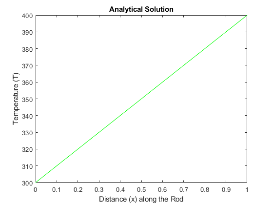
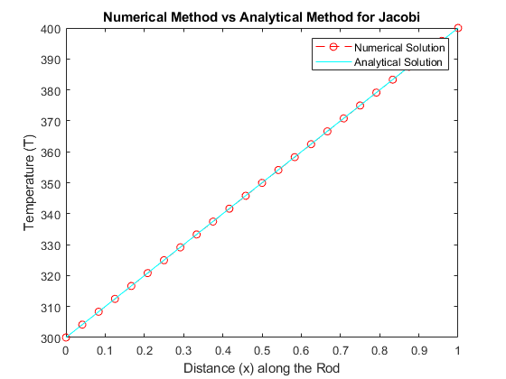
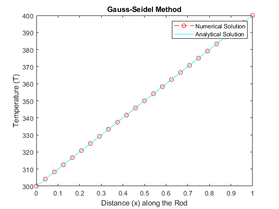
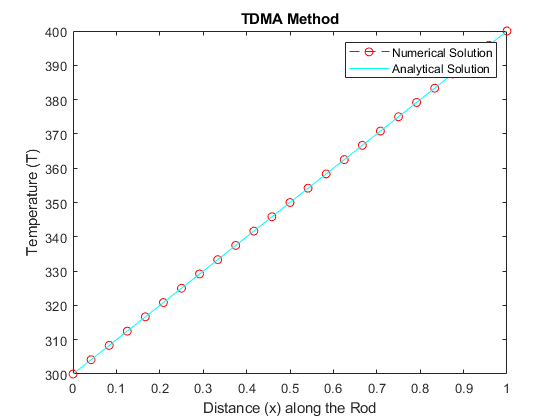
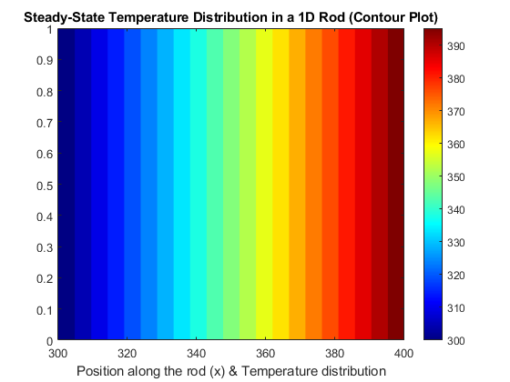
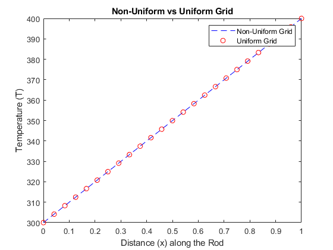
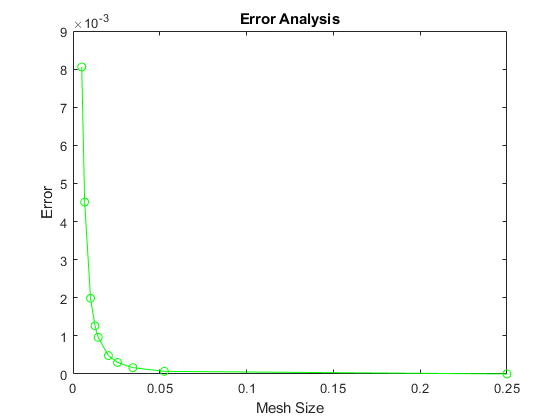

clc
clear all
L = 1;
k = 45;
Ta = 300;
Tb = 400;
n = 25;
initial_position = 0;
final_position = L;
h = (final_position - initial_position)/(n-1);
x = linspace(0, L, n);
T_analytical = 100 * x + 300;
x_analytical = x;
plot(x_analytical, T_analytical, 'g-');
title('Analytical Solution');
xlabel('Distance (x) along the Rod');
ylabel('Temperature (T)');
T = zeros(1, n);
T(1) = Ta;
T(n) = Tb;
Tolerance = 1e-3;
T_old = T;
iterations = 0;
Error = 1;
while Error > Tolerance
for i = 2:n-1
T(i) = 0.5 * (T_old(i-1) + T_old(i+1));
end
Error = max(abs(T - T_old));
T_old = T;
iterations = iterations + 1;
end
figure;
plot(x, T, 'r--o');
hold on;
plot(x_analytical, T_analytical, 'c-');
title('Numerical Method vs Analytical Method for Jacobi');
xlabel('Distance (x) along the Rod');
ylabel('Temperature (T)');
legend('Numerical Solution', 'Analytical Solution');
disp(['No. of Iterations in Jacobi Method: ', num2str(iterations)]);
T_gs = zeros(1, n);
T_gs(1) = Ta;
T_gs(n) = Tb;
T_old_gs = T_gs;
iterations = 0;
Error = 1;
Errors_gs = [];
iterate_gs = [];
while Error > Tolerance
for i = 2:n-1
T_gs(i) = 0.5 * (T_gs(i-1) + T_old_gs(i+1));
end
Error = max(abs(T_gs - T_old_gs));
iterations = iterations + 1;
iterate_gs = [iterate_gs, iterations];
Errors_gs = [Errors_gs, (norm(T_gs - T_old_gs, 2) / norm(T_old_gs, 2))];
T_old_gs = T_gs;
end
x = linspace(0, 1, n);
figure;
plot(x, T_gs, 'r--o');
hold on;
plot(x_analytical, T_analytical, 'c-');
title("Gauss-Seidel Method");
ylabel("Temperature (T)");
xlabel("Distance (x) along the Rod");
legend('Numerical Solution', 'Analytical Solution');
disp(['No. of Iterations in Gauss-Seidel Method: ', num2str(iterations)]);
T = zeros(1, n);
T(1) = Ta;
T(n) = Tb;
P = zeros(1, n);
Q = zeros(1, n);
a = 2;
b = 1;
c = 1;
d = 0;
P(1) = 0;
Q(1) = Ta;
for i = 2:n-1
P(i) = b / (a - c * P(i - 1));
Q(i) = (d + c * Q(i - 1)) / (a - c * P(i - 1));
end
Q(n) = Tb;
for i = n-1:-1:1
T(i) = T(i + 1) * P(i) + Q(i);
end
figure;
plot(x, T, 'r--o');
hold on;
plot(x_analytical, T_analytical, 'c-');
title('TDMA Method');
xlabel('Distance (x) along the Rod');
ylabel('Temperature (T)');
legend('Numerical Solution', 'Analytical Solution');
disp(['No. of Iterations in TDMA Method: ', num2str(iterations)]);
[X, Y] = meshgrid(x, T_gs);
figure;
contourf(Y, X, Y, 20, 'LineColor', 'none');
colormap(jet);
colorbar();
xlabel('Position along the rod (x) & Temperature distribution');
title('Steady-State Temperature Distribution in a 1D Rod (Contour Plot)');
p = 0.3;
x_nu = zeros(1, n);
for i = 2:n
x_nu(i) = L * ((i - 1) / (n - 1))^p;
end
T_nu = zeros(1, n);
T_nu(1) = Ta;
T_nu(n) = Tb;
T_old_nu = T_nu;
iterations = 0;
Error = 1;
Errors_nu = [];
iterate_nu = [];
while Error > Tolerance
for i = 2:n-1
R = (x_nu(i+1) - x_nu(i)) / (x_nu(i) - x_nu(i-1));
T_nu(i) = (R * T_nu(i-1) + T_old_nu(i+1)) / (1 + R);
end
Error = max(abs(T_nu - T_old_nu));
iterations = iterations + 1;
iterate_nu = [iterate_nu, iterations];
Errors_nu = [Errors_nu, (norm(T_nu - T_old_nu, 2) / norm(T_old_nu, 2))];
T_old_nu = T_nu;
end
T_gs = zeros(1, n);
T_gs(1) = Ta;
T_gs(n) = Tb;
T_old_gs = T_gs;
iterations_gs = 0;
Error_gs = 1;
while Error_gs > Tolerance
for i = 2:n-1
T_gs(i) = 0.5 * (T_gs(i-1) + T_old_gs(i+1));
end
Error_gs = max(abs(T_gs - T_old_gs));
iterations_gs = iterations_gs + 1;
T_old_gs = T_gs;
end
x = linspace(0, L, n);
figure;
plot(x_nu, T_nu, 'b--');
hold on;
plot(x, T_gs, 'ro');
title("Non-Uniform vs Uniform Grid");
ylabel("Temperature (T)");
xlabel("Distance (x) along the Rod");
legend(["Non-Uniform Grid", "Uniform Grid"]);
disp(['No. of Iterations in Gauss Seidel Method with Non-Uniform Grid: ', num2str(iterations)]);
disp(['No. of Iterations in Gauss Seidel Method with Uniform Grid: ', num2str(iterations_gs)]);
grid_points = [5, 20, 30, 40, 50, 70, 80, 100, 150, 200];
Error_t = [];
mesh_size = [];
for grid_point = grid_points
x_t = linspace(0, L, grid_point);
mesh_size = [mesh_size, x_t(2) - x_t(1)];
T_t = zeros(1, grid_point);
T_t(1) = Ta;
T_t(grid_point) = Tb;
T_old_t = T_t;
iterations = 0;
Error = 1;
while Error > Tolerance
for i = 2:grid_point-1
T_t(i) = 0.5 * (T_t(i-1) + T_old_t(i+1));
end
Error = max(abs(T_t - T_old_t));
iterations = iterations + 1;
T_old_t = T_t;
end
T_analytic = 100 * x_t + 300;
Error_t = [Error_t, (norm(T_t - T_analytic, 2) / norm(T_analytic, 2))];
end
figure;
plot(mesh_size, Error_t, 'g-o');
title("Error Analysis");
xlabel("Mesh Size");
ylabel("Error");
No. of Iterations in Jacobi Method: 1041
No. of Iterations in Gauss-Seidel Method: 523
No. of Iterations in TDMA Method: 523
No. of Iterations in Gauss Seidel Method with Non-Uniform Grid: 727
No. of Iterations in Gauss Seidel Method with Uniform Grid: 523
      